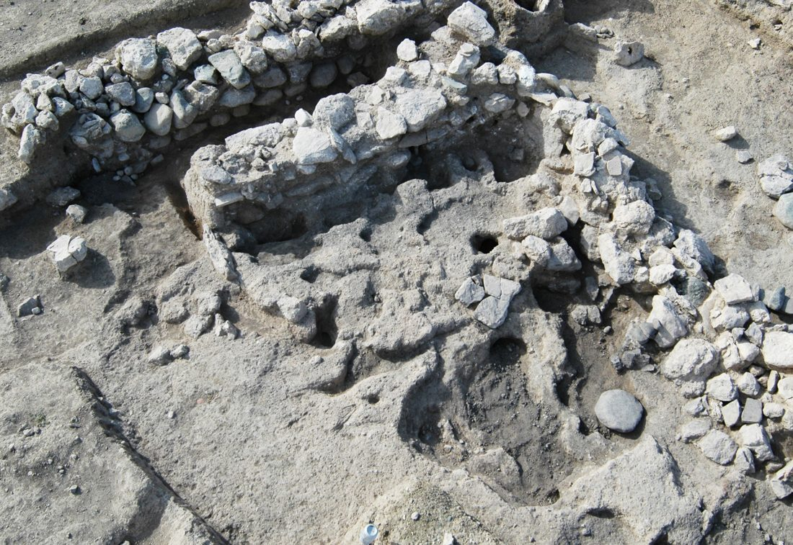
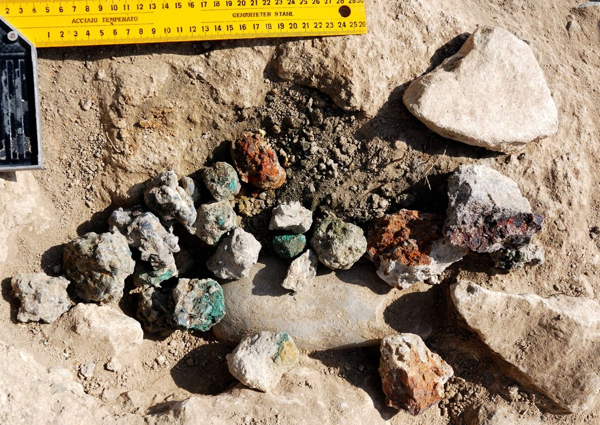
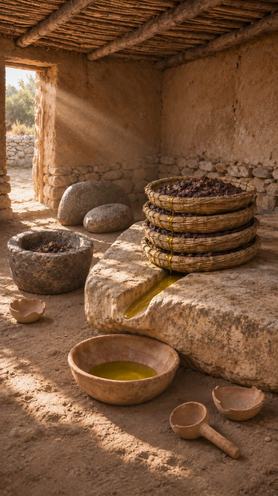
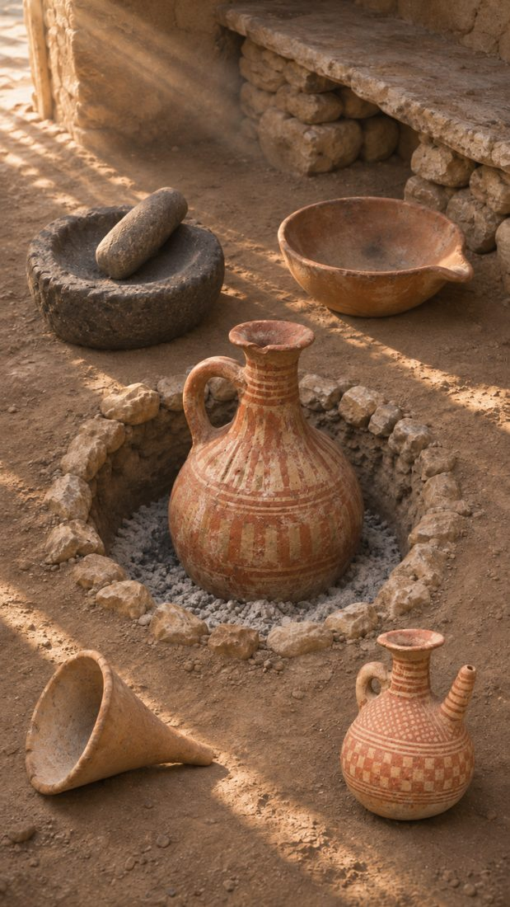
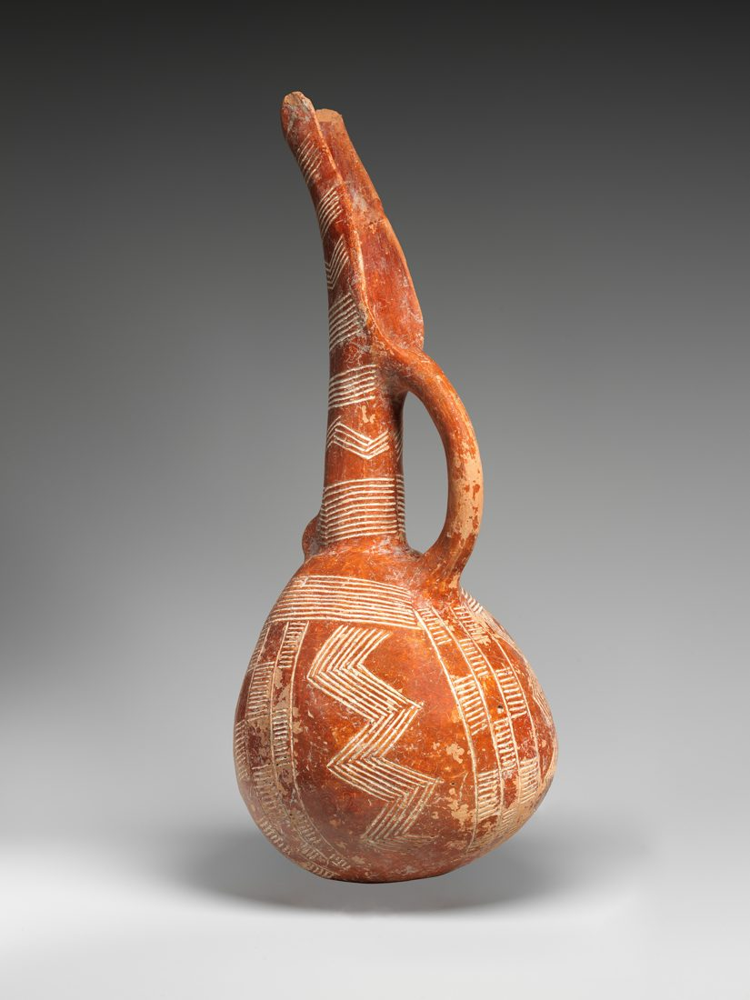
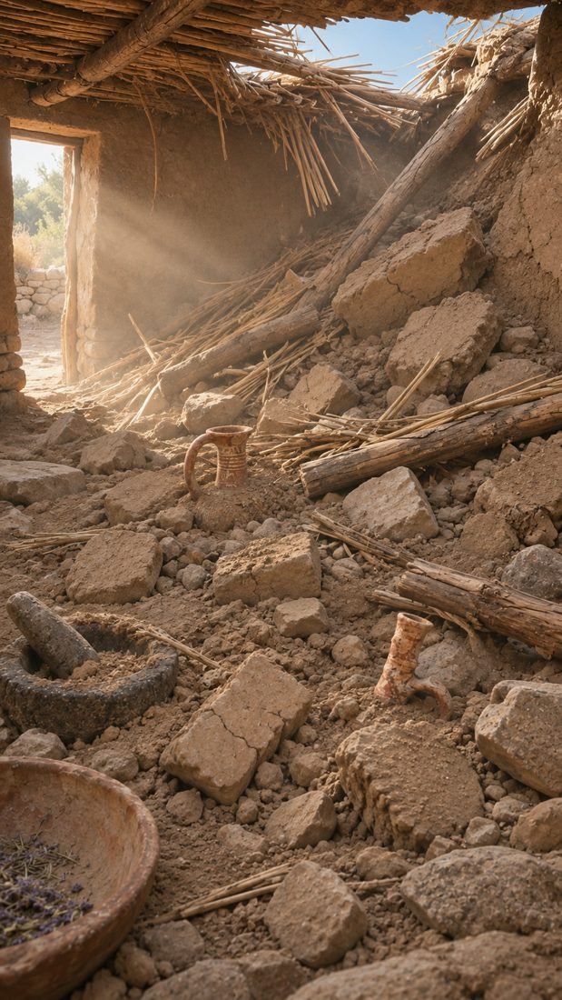
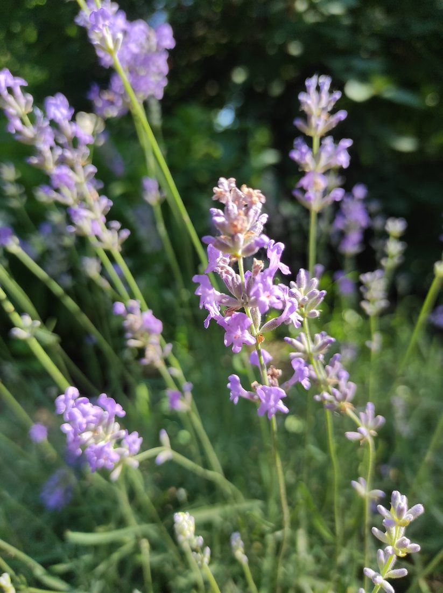
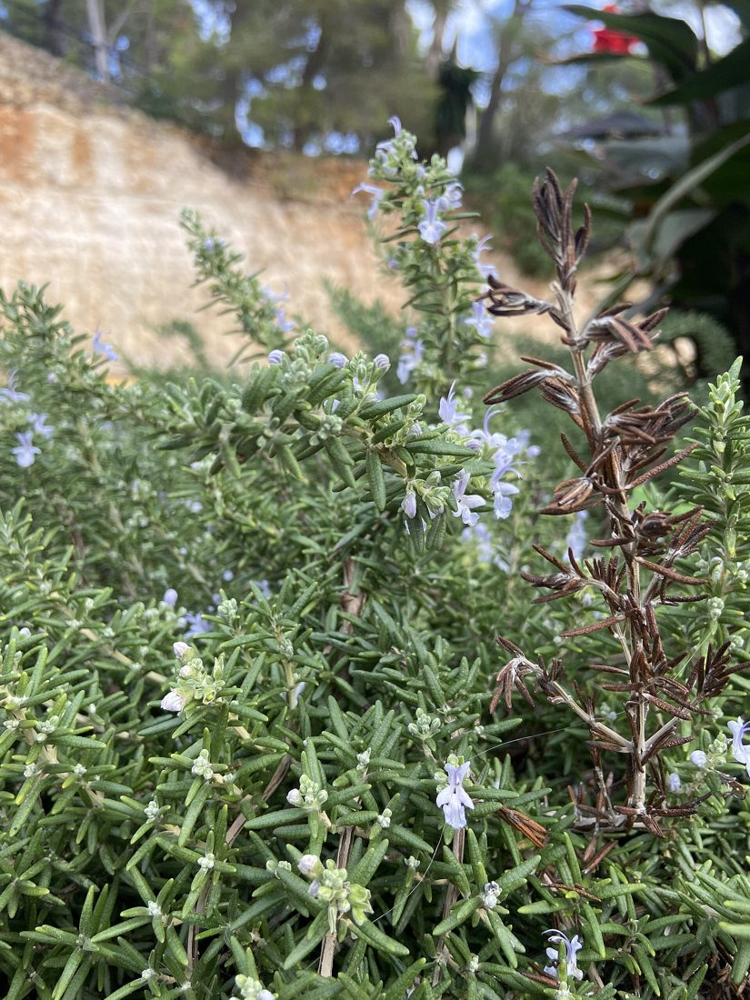
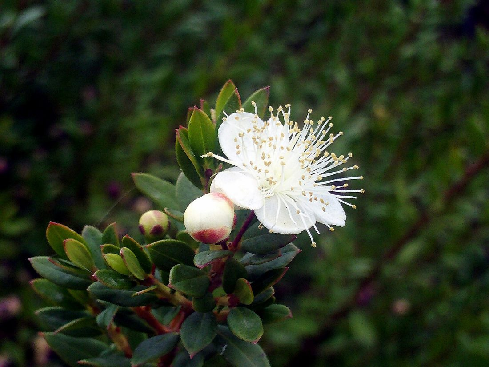

Мастерская, которую спасло землетрясение
Как археологи узнали, что на Кипре делали духи почти 4000 лет назад. Подробности к видео Amadeo Perfume Wardrobe.

- ок. 1850год до н. э., когда землетрясение обрушило здание
- 14ям с кувшинами в углу маслодавильни
- ~70керамических предметов вокруг ям
Остров меди
В бронзовом веке Кипр был одним из главных источников меди в Средиземноморье. Само латинское слово для меди, cuprum, происходит от названия острова. Поэтому неудивительно, что большое здание на юге острова оказалось прежде всего мастерской по меди.
Где это
Пиргос-Маврораки — место раскопок у деревни Пиргос на юге Кипра. С 1998 года здесь работала итальянская археологическая миссия Национального совета по исследованиям Италии (CNR) под руководством Марии Розарии Бельджорно.
Археологи открыли большое здание бронзового века — по их данным, площадью не меньше 4000 квадратных метров. В нём обрабатывали медь: от руды до готовых изделий. Рядом с мастерскими по меди стояла большая маслодавильня: здесь давили оливки и отжимали масло, укладывая корзины с оливковой пастой на каменные плиты.


Мастерская в углу маслодавильни
В 2003 году в углу этой маслодавильни нашли парфюмерную мастерскую. Пол здесь был приподнят, и в нём устроили 14 ям, обложенных камнями. В каждой яме стоял кувшин — на слое золы.
Вокруг ям лежали каменные ступки и пестики, чаши и миски, черпаки, глиняные воронки и флаконы для духов — всего около 70 керамических предметов.


Почему всё сохранилось
Около 1850 года до н. э. сильное землетрясение разрушило здание. Стены рухнули и накрыли мастерские. Под тонким слоем земли археологи нашли, по словам самих раскопщиков, «запечатанный мир»: сосуды и инструменты стояли так, что было видно — в момент землетрясения здесь делали духи.
Для археолога это редкая удача. Обычно мастерскую бросают, вещи уносят или они ломаются за века. Здесь же работа остановилась в один момент, и порядок предметов на полу сам рассказывает, как шла работа.

Как это узнали. Учёные из Института технологий для культурного наследия (ITABC-CNR) и Флорентийского университета взяли пробы земли из ям и органических остатков со стенок сосудов. Химический анализ показал оливковое масло и ароматические вещества; другие растения определили по пыльце, семенам и обугленным частицам.
Что нашли
Кроме оливкового масла, в остатках нашли следы многих растений, которые растут на Кипре и сегодня. Среди них — лаванда, розмарин и мирт, а также кориандр, горький миндаль, бергамот, терпентинная смола, сосна, лавр, майоран, шалфей, ромашка и петрушка.



Важно: это следы, найденные по всей мастерской, а не один рецепт. Мы не знаем, какие растения смешивали вместе.
Почему масло? В древности основой для духов служил жир. Ароматы растений переходили в жир: травы и цветы долго держали в оливковом масле, и масло брало их запах. Так делали ароматные масла во всём древнем Средиземноморье.
Как проверили
В 2006–2007 годах центр экспериментальной археологии Antiquitates (Италия) сделал копии глиняных сосудов и каменных тёрок из Пиргоса и приготовил в них ароматические масла. Четыре таких аромата можно было понюхать на выставке в Капитолийских музеях в Риме в 2007 году.
Что дальше
Масло и травы — но как из них сделать духи? Об этом — во второй серии: как, по описанию раскопщиков, травы, вода и оливковое масло несколько дней стояли в кувшине в тёплой яме.
Об этом видео
Видео создано с помощью ИИ. Ведущий — ИИ-образ Умара, основателя Amadeo Perfume Wardrobe, созданный с его согласия, с клоном его голоса. Сцены и картинки с подписью «Реконструкция» созданы ИИ по описаниям раскопок; они показывают, как могло быть, а не реальные находки. Кувшин из Метрополитен-музея — кипрский кувшин той же эпохи, не из Пиргоса. / შექმნილია AI-ს დახმარებით
Источники
- M. R. Belgiorno, «L'isola di Afrodite e i suoi profumi vecchi di 4000 anni», каталог выставки, Musei Capitolini, 2007. PDF
- Пресс-релиз CNR и Капитолийских музеев «I profumi di Afrodite e il segreto dell'olio», 13 марта 2007. PDF
- «Gli scavi di Pyrgos», текст выставки, 2007. PDF
- M. R. Belgiorno, The Perfume of Cyprus, 3-е издание, 2017. PDF
- M. R. Belgiorno, L. Pontieri, «Pyrgos Mavroraki Smelting and Melting Experiments in a Metallurgical Workshop of the Second Millennium BC», EXARC Journal 2021/2. exarc.net
Изображения
- Раскопки и медные шлаки Пиргос-Маврораки: фото Antonio De Strobel, EXARC Journal 2021/2, CC BY 4.0 (обрезаны).
- Кувшин, Кипр, ок. 2000–1800 до н. э.: The Metropolitan Museum of Art, 74.51.1195, Open Access (CC0).
- Лаванда: Валерія Матвєєва, CC0. Розмарин: CeruleanPanda, CC BY-SA 4.0. Мирт: Javier Martin, public domain.
- Карта в видео: EOxCloudless 2016 © EOX IT Services GmbH (contains modified Copernicus Sentinel data 2016), CC BY 4.0.
- Реконструкции: созданы ИИ для Amadeo Perfume Wardrobe.


Amadeo Perfume Wardrobe, Тбилиси · amadeoperfume.ge